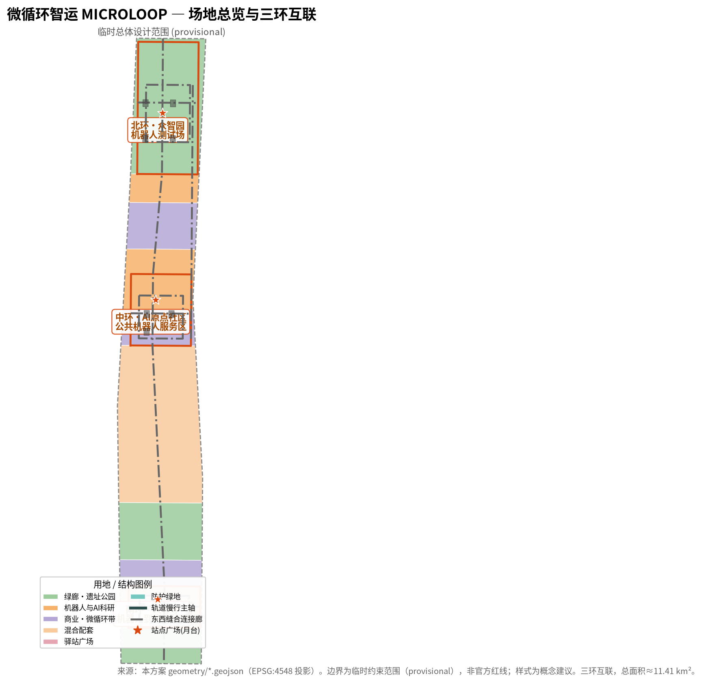
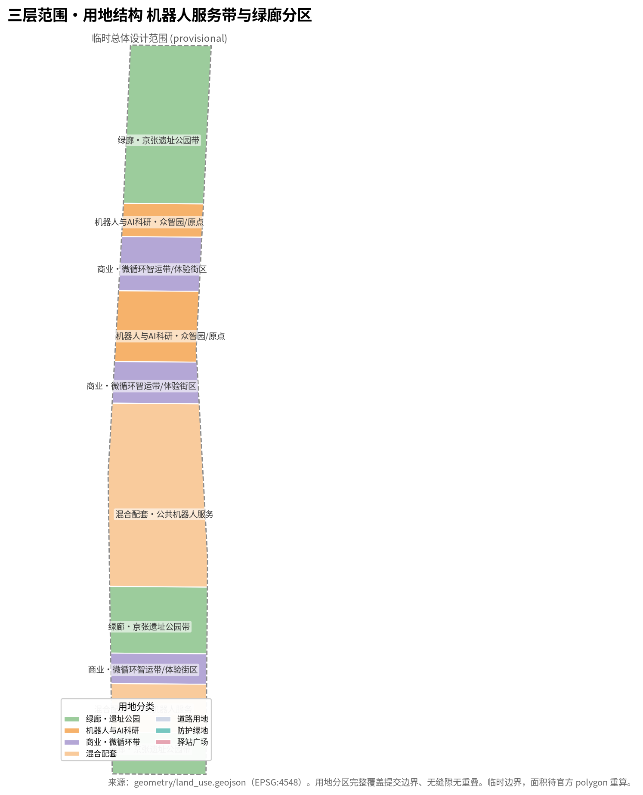
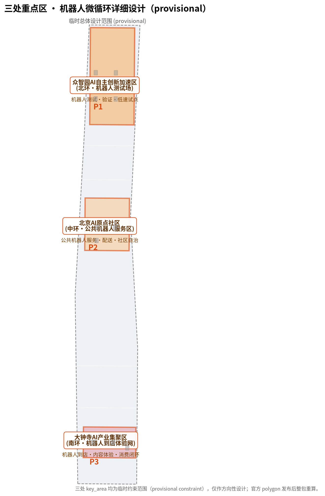
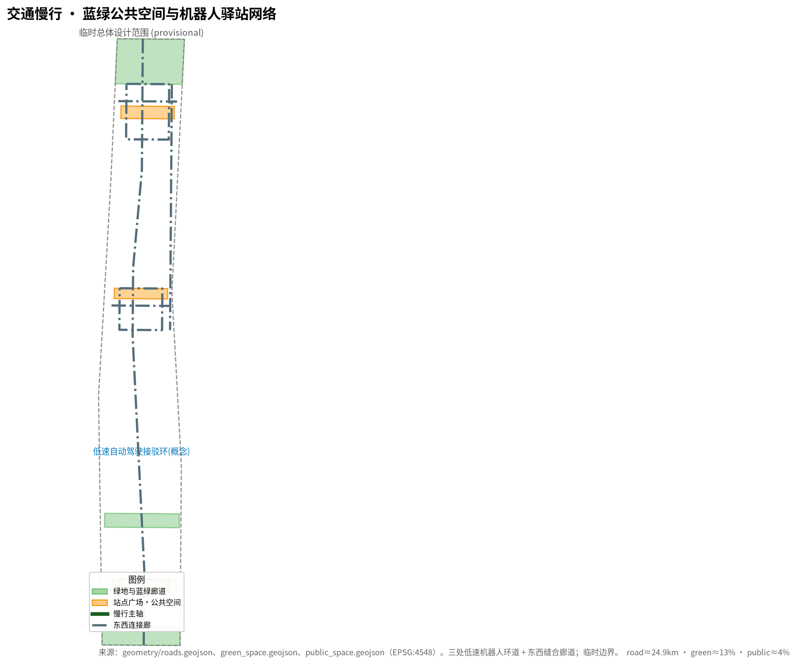

微循环智运 MICROLOOP：京张AI创新带的低速机器人·无人接驳末端网络
以「微循环智运 MICROLOOP」为总体概念，把京张AI创新带的三区两翼组织为一张低速机器人 + 无人接驳的末端微循环网络：配送、巡检、导览、清洁与无障碍随行机器人沿三处重点区环道与东西缝合廊道运行，站点间以低速自动驾驶接驳环贯通，形成「干线轨道 + 末端微循环」的双层流动。统筹43.6km²研究范围、11.4km²总体设计范围与368.4ha三处重点区，提出三环互联、机器人驿站、公共机器人服务区与24类末端场景，全部空间建议均为概念建议（provisional boundary），不替代正式规划。
微循环智运 MICROLOOP：京张AI创新带的低速机器人·无人接驳末端网络
设计依据与资料清单
本方案以北京市规划和自然资源委员会海淀分局发布的《百年京张AI创新带城市设计国际方案征集资格预审公告》为第一依据 来源，并以维护者登记的三层范围、三处重点区、枚举、指标、来源与专业标准清单为机器可读依据 来源。面向智能体的开源征集任务书（agent.1–agent.6）为六项创意性与运营性任务提供直接依据 来源。全部正式结论必须回溯到 data/source_registry.json 中标注为 usable_for_formal="yes" 的资料；provisional-only 与 background-only 资料只用于生成、展示和设计讨论，不得升级为官方边界、法定控规或正式评分证据 来源。
需要特别说明的是：本项目官方 SITE_BOUNDARY 与三处 KEY_AREA 精确 polygon 尚未向社会公布（资格预审包为密码保护下载，截至检索未取得公开精确边界）。本方案因此使用维护者依据公告文字四至与约面积在 EPSG:4548 下推定并校核的临时粗略边界（provisional constraint） 来源来源来源。范围、任务、来源边界与缺失数据清单还可回溯到智能体可读事实包导航层 来源。该边界仅用于 AI 生成、展示与临时自检，不得视为 official redline、审批依据或精确面积复算依据；组织方数据缺口本身不阻断内容评分，但官方 polygon 发布后，site boundary、land use、roads、green/publ space、buildings、phasing 与全部面积/比例指标均须整包重算 指标。
方案参照控制性详细规划与规划综合实施方案的框架开展概念研究，采用 标准 与 标准 的深度组织方法与专业标准作为参照，用地分类遵循 标准；本方案为概念研究，不构成法定控规、实施成果或审批基准。机器人低速试点与公共服务分别遵循低速交通、无障碍与老年人友好相关法规的合规边界（完整标准清单见 standard_matrix.json）。上文这些标准、任务、来源、指标与设计深度的完整索引分别保存在 standard_matrix.json、compliance_matrix.json、sources.json、metrics.json 与 design_depth_matrix.json，正文只在关键判断处放置少量可校验引用，不做机器索引堆叠。

三层范围工作框架
方案按公告确定的三层范围组织：统筹研究范围（43.6 km²，北至北五环、东至京藏高速、南至西直门外大街、西至万泉河路）回答“低速机器人与自动驾驶如何重构城市末端流程”的战略问题 指标；总体设计范围（11.4 km²，京张遗址公园周边1–2公里城市与产业地区）把战略落实到末端物流、公共机器人服务与慢行接驳的试点网络 空间数据；重点区域范围（368.4 ha，自北向南为众智园、北京AI原点社区、大钟寺）对三处片区内的机器人环道与驿站进行详细设计 空间数据。
三层范围不是割裂的图纸集合：统筹研究决定末端流程判断，总体设计把判断转译为机器人服务区与微循环廊道，重点区域在站点尺度验证低速接驳的可实施性。方案在 compliance_matrix.json 中把公告 1.3、1.4、1.5 与 agent.1–agent.6 逐条映射到章节、图层、指标、图纸与 HTML 证据 深度。
由于三处重点区 polygon 现为临时粗略矩形（provisional constraint），本方案对其中的功能、建筑更新、机器人驿站与AI场景只作方向性设计；矩形边不得解释为地块或道路红线，任何精确面积均待官方 polygon 发布后重算 深度。

统筹研究范围产业与未来城市研究
总体概念：微循环智运 MICROLOOP
本方案提出总体概念 「微循环智运 MICROLOOP」：把京张AI创新带组织为一张低速机器人 + 无人接驳的末端微循环网络。它作为干线轨道（大型城市轨道/接驳主轴）之外“最后一公里”的末端层，回答“干线之后末端如何贯通”——园区内的配送、巡检、导览、清洁与无障碍随行机器人沿三处重点区环道运行，核心站点之间以低速自动驾驶接驳环贯通，形成「干线 + 末端微循环」的双层流动 空间数据。
- 环道（Loop）＝三处重点区各设一条低速机器人环道，是末端服务的物理骨架 空间数据。
- 机器人（Bot）＝配送、巡检、导览、清洁、随行等低速终端，是环道上可调度、可复核的“信使”。
- 驿站（Hub）＝换电、装卸、调度与运维节点，是末端网络的“器官” 空间数据。
- 协议（Protocol）＝低速试点遵守“可监管、可复核、可回退”的合规协议，任何一个场景都可临时或永久回退到人工。
这一概念让“百年京张文化带、都市AI生活体验带、AI融合创新带”三大定位落到可运行的末端网络：文化带＝沿遗址公园的慢行导览与信使机器人，生活体验带＝园区内的配送与公共机器人服务，创新带＝低速自动驾驶试点与机器人产业集聚 来源。
三大定位、五大功能与三环互联
方案明确三大定位（百年京张文化带／都市AI生活体验带／AI融合创新带），并把其落实为五大功能：末端物流自主化、公共机器人服务、低速自动驾驶试点、AI治理的末端话语权、智能化活力城市 来源。五大功能通过“三环互联”协同回路运转：
- 北环（众智园）：机器人测试、验证与低速自动驾驶试点 空间数据。
- 中环（AI原点社区）：公共机器人服务、配送与社区自治的开放接口 空间数据。
- 南环（大钟寺）：智能原生零售、内容体验与机器人到店的消费闭环 空间数据。
- 东西缝合廊道：三环之间的低速接驳与公共机器人服务串联 空间数据。
协同回路可表述为：北环试验 → 中环公共化 → 南环消费沉淀 → 东西廊道融合流通 → 反哺北环迭代，形成“测试—公共服务—消费—数据”的末端闭环 标准。
全球机器人·低速自动驾驶案例对标
本方案对标全球城市末端自动化实践：配送/巡检/清洁/导览四类低速机器人在韩国、日本、北美校园与园区试点中的共同经验是——低速、限定区域、可监管回退是首发前提；先行者多从“单一品类、单一环线”起步，再向“多品类、多环互联”演进。京张带具备三环并存、路权清晰、试点空间大的独特条件，适合作为低速机器人末端网络的集成试验床 来源。
未来城市形态与AI+公共服务、连续绿色空间
末端机器人网络不是孤立的“配送设施”，而是与慢行、绿廊、公共空间共构的友好界面：机器人共享路权、优先让行、无障碍随行，与公园带绿廊叠加形成“绿色+智慧”的公共空间体验 空间数据。AI+公共服务（医疗配送、法律援助、政务代办等）沿微循环网络布点，把服务送到“最后一公里” 来源。
总体设计范围城市更新与控规深度城市设计
用地结构
总体设计范围按“绿廊＋机器人服务带＋混合街区”组织用地。以绿廊为背景，三处重点区外围布置公共机器人服务区与微循环智运带，把末端物流、换电、仓储与公共机器人服务嵌入城市肌理，避免“机器人设施孤岛化” 空间数据。
空间结构与城市更新
以“三环互联＋东西缝合”为空间骨架：三处重点区各为一条机器人环道，东西向由低速接驳廊道缝合；园区更新围绕“机器人驿站＋公共广场＋混合街区”展开，优先盘活低效用地为机器人服务设施 空间数据。
交通、轨道、市政与新型基础设施
低速机器人环道与慢行主轴分层共享路权，环道内侧为人行与绿地，外侧为低速机器人/无人接驳道；市政预留换电、通信与高精地图接口，为末端自动驾驶提供可扩展基础设施 空间数据。
京张遗址公园活力带与城市风貌
机器人导览与随行服务沿遗址公园活力带布置，作为文化叙事与公共服务的一部分；机器人采用小巧、安静、友好外观，融入地方风貌而非突兀的“自动化壁垒” 空间数据。
用地、建筑规模与拆改留方案
本方案在三环互联的空间骨架下，对总体设计范围内的用地与建筑规模采取“留改为主、拆建为辅”的原则。保留核心产业楼宇、科研院所与公共文化建筑，延续地块既有产权与功能基底 空间数据；改造低效物业与临建，置换为机器人驿站、分拣转运、公共机器人服务与换电运维设施，避免大拆大建 空间数据；新建少量机器人测试工场与换电节点，集中在北环（众智园）与东西缝合廊道的重要节点，作为末端网络的“基础设施锚点” 空间数据。
建筑规模遵循官方用地分类与高度管控：科研、公共服务与商业用地按官方代码分区 空间数据，建筑面积与容积率由 metrics.json 的建筑足迹指标反映 指标；由于官方 polygon 与高度/密度控制尚未发布，建筑密度、高度、容积率等法定指标标记为待正式数据补齐 [reason:planning_limits_missing]。拆改留策略以升级而非推平为取向：保留街廓尺度与可达性，改造业态与基础设施，使机器人末端服务嵌入既有城市肌理而非形成孤岛，实现“低扰动、高可运维”的城市更新 深度。
交通、轨道、市政与公共服务设施
低速机器人/无人接驳网络是总体设计范围内“最后一公里”的交通骨架，与慢行、公交、轨道接驳协同成网 空间数据。三处重点区各设一条低速机器人环道（北环、中环、南环），环道内侧为人行与绿地、外侧为低速机器人/无人接驳道，实现分层共享路权 空间数据；东西缝合廊道作为三环之间的低速接驳干线 空间数据。
市政与新型基础设施方面：装配式换电柜、通信基站与高精地图接口在驿站与环道节点预留，为末端自动驾驶提供可扩展基础设施；装卸月台与调度中心集中于机器人驿站广场 空间数据。公共服务（医疗配送、法律援助、政务代办、无障碍随行）沿微循环网络布点，把服务送到“最后一公里”，形成末端公共服务带 来源。道路中心线长度与覆盖由 metrics.json 的慢行/路网指标衡量 指标；官方红线与市政管线待正式数据补齐后复算 [reason:planning_limits_missing]。
蓝绿空间、公共空间与城市风貌
机器人环道沿蓝绿廊道布置，使末端物流与生态廊道共生而非冲突 空间数据。绿廊提供遮荫、休憩、噪声缓冲与机器人静默停机位，机器人以小巧、安静、友好外观融入公共空间，而不是“自动化壁垒”，强化“绿色+智慧”的公共风貌 空间数据。
公共空间的核心载体是机器人驿站广场（换电、装卸、调度、等候、人机交接），既是设施也是城市家具 空间数据。三处驿站广场（北环试验灯塔、中环服务枢纽、南环体验终端）构成 AI 朝圣与公共体验节点 空间数据。绿地占比与公共空间占比由 metrics.json 从 geometry/*.geojson 在 EPSG:4548 复算 指标指标；官方绿线、蓝线与公共空间边界待正式数据发布后重算 [reason:planning_limits_missing]。
风险、版权与合规说明
本方案为概念建议（provisional），不替代正式规划、控规或法定审批。低速机器人试点遵循“可监管、可复核、可回退”原则：任一场景在合规、安全或公众接受度不足时可临时或永久回退到人工，降低试错风险 来源。
空间建议均为方向性设计：三处重点区为临时约束范围（provisional constraint），官方 polygon、红线与控制条件发布后，site boundary、land use、roads、green/public space、buildings、phasing 及全部面积/比例指标须整包重算 来源来源。资料与版权界限遵循 sources.json 与 standard_matrix.json 的可用性标注，不引用未清权资料；公开、已清权与临时资料的合规使用边界见来源注册表 来源来源。



更新项目清单、实施政策与分期计划
三环互联分期实施 空间数据：
- 一期（众智园）：北环低速试点，测试配送/巡检/导览机器人 空间数据。
- 二期（AI原点）：中环公共机器人服务与配送开放 空间数据。
- 三期（大钟寺）：南环消费体验网与全域微循环贯通 空间数据。
每期配套机器人驿站、换电与调度政策，滚动监测低速试点合规性 指标。
重点区域详细设计
众智园AI自主创新加速区（北环·机器人测试场）
北环承担机器人测试、验证与低速自动驾驶试点：机器人测试工场、换电站、巡检与配送环道，作为全栈自主创新的末端试验床 空间数据。
北京AI原点社区（中环·公共机器人服务区）
中环面向社区与人才，提供公共机器人服务：无人配送、无障碍随行、政务代办与社区自治接口，强调“人人可用” 空间数据。
大钟寺AI产业集聚区（南环·机器人到店消费）
南环面向智能原生零售与内容体验：机器人到店配送、智能售货、内容直播与消费闭环，把低速机器人变成消费体验的一部分 空间数据。
AI 创新生态、人才画像与 AI+ 场景
用户画像（5类）
面向机器人末端网络的五类画像：园区白领（快递/外卖末端配送）、社区居民（生活配送与无障碍随行）、游客与访客（导览/随身照护机器人）、企业运维（巡检/清洁/资产管理）、开发者与服务商（场景开放与数据接口）来源。
AI场景卡（24类，覆盖10+）
末端场景卡覆盖：无人配送（快递/外卖/生鲜）、智能巡检（安防/设施）、导览随行（文化/无障碍）、清洁维护（路面/园区）、公共机器人服务（政务代办/医疗保障/法律咨询）、低速自动驾驶接驳（站点间环线）等 24 类，全部遵循“可监管、可复核、可回退”协议 深度。
AI公共空间、智能原生新业态与AI朝圣地标
AI公共空间与东西缝合
机器人驿站广场即 AI 公共空间，是人机交接面：换电、装卸、等候、充电都发生在公共空间，既是设施也是城市家具 空间数据。
三个AI朝圣地标
三处环道的机器人驿站升级为AI朝圣地标：北环“试验灯塔”、中环“服务枢纽”、南环“体验终端”，作为市民体验低速机器人时代的场所 空间数据。
智能原生新业态与公共空间组件库
生成“机器人驿站组件库”：换电柜、卸货月台、停机位、调度屏、人机交接台等标准化组件，可跨环复用，降低建设与运维成本 深度。
百年京张文化、中关村文化与AI新文化融合叙事
文化叙事
机器人末端网络与百年京张铁路的“信使与驿站”传统对话：站点如旧驿站、环道如旧货道，把“最后一公里”重新接回人的尺度，不让自动化割裂社区 来源。
命名体系与Logo方向
沿用“环 LOOP + 机器人 BOT + 驿站 HUB”命名家族，Logo 方向为环形轨道上的机器人剪影，强调“低速、友好、可回退” 深度。
一带全球AI创新活动体系与长期运营
低速自动驾驶·机器人开放日活动
年度“微循环开放日”：公开三环试点数据、开放部分场景给开发者与市民体验，建立长期运营与品牌资产 来源。
开发者社区与场景开放运营
开放机器人场景 API、低速试点合规清单与数据接口，汇聚开发者与服务商，把末端网络转化为可持续运营的公共平台 来源。
长期品牌资产机制
将“三环互联”打造为京张AI创新带的公共标识，通过试点报告、合规白皮书与开放数据沉淀长期品牌资产 来源。
指标体系、面积复算与合规矩阵
方案关键指标与合规矩阵见 metrics.json 与 compliance_matrix.json：总体面积、绿地占比与公共空间占比由 geometry/*.geojson 在 EPSG:4548 复算 指标指标指标，重点区数量与分期实施范围一并纳入 指标指标。法定控制（建筑密度、高度、容积率）缺官方条件，标记为待正式数据补齐 [reason:planning_limits_missing]。
参考资料
本方案依据 sources.json 列出的公开、已清权与临时资料编制，主要包括：官方资格预审公告（任务、范围、深度与成果要求，以 url 记录在来源清单中）来源；维护者登记的 site-package（官方枚举、允许设计空间、范围、schema，是本方案所有 land_use_code/road_class/building_type/source_type 的口径来源）来源；公开/已清权/临时资料可用性注册表（区分 formal-ready、background-only、provisional-only 与 needs-review 材料）来源；智能体可读事实包导航层（范围、必选任务、来源使用边界与缺失数据清单）来源；面向智能体的开源征集任务书（六项必选任务 agent.1–agent.6、场景、品牌与运营要求、边界条款）来源；以及场地与三处重点区的临时边界资料（provisional，供 AI 生成、展示与临时自检）来源来源。
全部正式结论回溯到来源注册表中标注 usable_for_formal="yes" 的资料；provisional-only 与 background-only 资料仅用于生成、展示和设计讨论，不得升级为官方边界、法定控规或正式评分证据 来源。资料与版权界限、专业标准清单分别见 standard_matrix.json 与 sources.json。